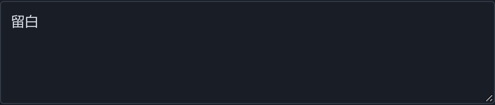

第三大脑THIRD BRAIN
Obsidian 桌面插件
把那一段，
找回来。
在 Obsidian 里搜一个词，
找回匹配段落，连同原文出处。
演示笔记里的一个词留白
对话留下的空隙
这类留白需要共同语境。删去所有线索只会让人不知道发生了什么。
搜索关键词→读匹配片段→查看原文
在 Obsidian 里搜一个词，
找回匹配段落，连同原文出处。
这类留白需要共同语境。删去所有线索只会让人不知道发生了什么。
不用先记起笔记名字。
从记得的一个词开始，看看哪些段落有关。
演示示例 / 搜索「留白」

搜索「留白」后的一条匹配片段
0.3.7 浏览器测试页局部，非 Obsidian 截图
演示示例；本地按文字与已有标签匹配。
每条结果附原文引用。
核对上下文，再决定怎样用。
这类留白需要共同语境。
删去所有线索只会让人
不知道发生了什么。
— 演示笔记《对话留下的空隙》
0.3.7 浏览器测试页局部，非 Obsidian 截图
默认本地处理，无需注册或配置 AI。
需要 Obsidian 桌面版 1.11.5+。
安装 0.3.7 Demo
按说明把文件放进插件文件夹。
点「更新笔记」
先用示例或几篇自己的笔记。
搜词，再查看原文
读片段，核对原来的上下文。
扫码查看项目
与安装说明
MIT 开源 · 演示版，建议先在测试库试用。